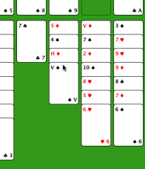

Freecell help
Freecell help
Hoe speel ik het?
Een zet doen is makkelijk. Klik op de plek waar u een kaart vandaan wilt verplaatsen en die kaart wordt grijs gemaakt. Klik dan op de plek waar u de kaart naartoe verplaatst wilt hebben en de zet wordt uitgevoerd (als het binnen de regels van het spel mag). Als u zich vergist heeft, kunt u uw zetten onbeperkt herstellen.

|
Hier gaan we klaver-vrouw verplaatsen naar ruiten-heer. We klikken op de tweede kolom en de onderste kaart wordt grijs gemaakt. |
|  | Nu hebben we op de tweede kolom geklikt en de kaart is verplaatst. We hadden ook op een lege vrije-cel kunnen klikken om de kaart daarheen te verplaatsen. |